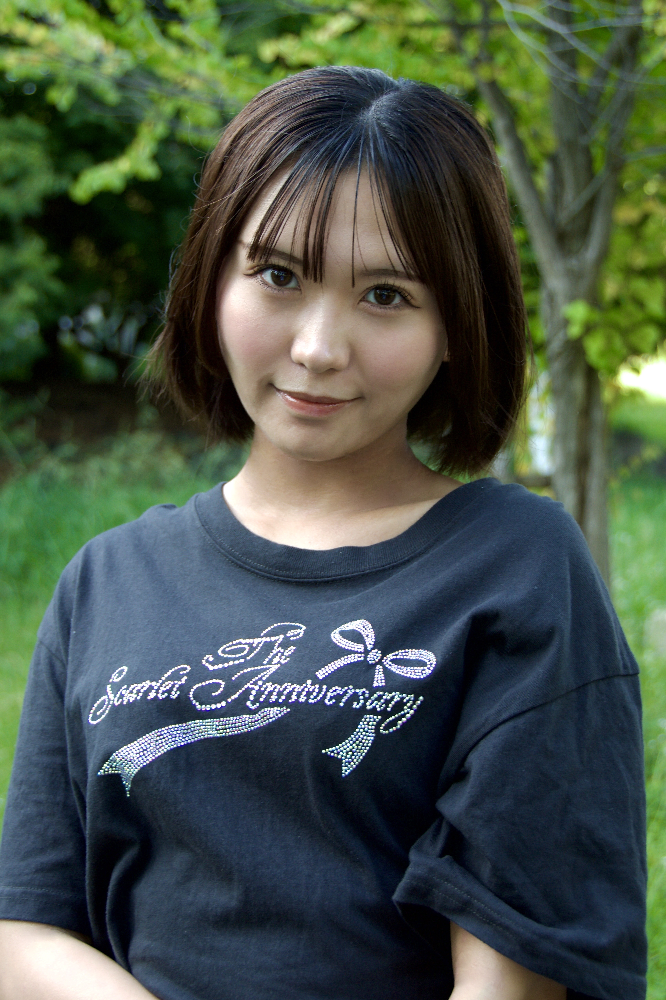
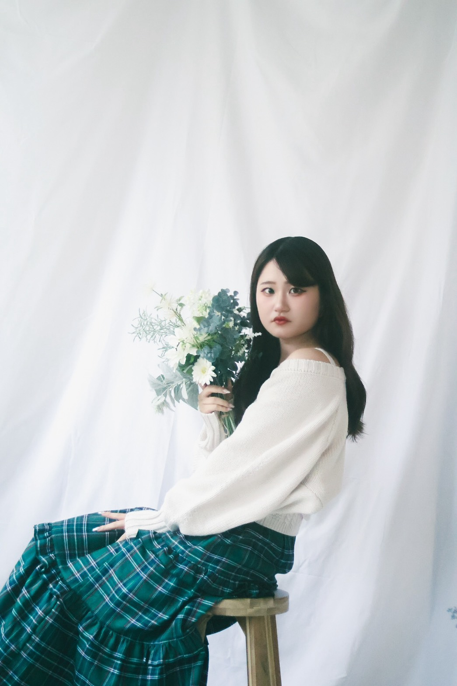
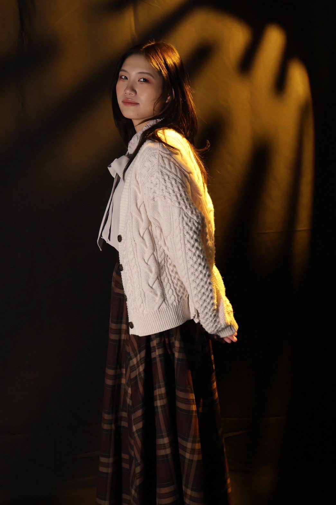

まずは現状の採用活動における課題と、SNSを使った解決の全体像をご説明します。
採用LPはテキスト中心の情報構成が多く、応募者が読み込む前に離脱してしまいます。
若手・未経験層は求人媒体で仕事を探しつつ、応募を決める前にSNSで会社の口コミや職場の雰囲気を確認しています。SNSに情報がない会社は、比較の土俵に乗る前に候補から外れてしまいます。
コンクリート検査という仕事のやりがいや現場の雰囲気は、テキストの求人情報だけでは十分に伝えきれません。
SNS単体で完結させず、認知から応募までの一本道を設計します。
会社紹介・社風・教育体制・給与のリアルを伝え、応募を検討している候補者の不安を解消します。
ナーチャリング再生数を稼ぎ、アカウント全体の認知を広げる動画です。トレンドの音源・フォーマットに乗せて拡散を狙い、さらに同じ動画をMeta広告で配信して認知を一気に広げます。
トレンド現場系のアカウントはどうしても男性中心で画が硬くなりがちです。女性キャストが作業服を着て現場を案内するだけで目を引き、他社との差別化になります。これは業界で実証済みの勝ちパターンです。
オーガニック投稿用に制作した動画は、そのままMeta広告（Instagram / Facebook）のクリエイティブとしても配信します。制作費を二重に使うことなく、オーガニックの伸びと広告の確実なリーチを両取りします。
同業種・未経験歓迎の採用アカウントで、実際に成果を出している動画です。マウスを乗せる（スマホはタップ）と再生されます。
概要：建設会社の女性広報が「SNSから応募が来て1名採用につながった」と報告する動画。
学ぶ点：採用の成果自体をコンテンツ化することで「この会社はSNSで人を採っている」という信頼になり、次の応募を呼びます。
概要：建築未経験の女性社員がTikTok担当に任命され、戸惑いながら奮闘を宣言する「第1話」型動画。再生9.2万回。
学ぶ点：未経験の担当者が成長していく物語は視聴者に応援され、硬くなりがちな現場系アカウントの入口を柔らかくします。
概要：施工管理の仕事内容を紹介し、給与反映・各種手当・資格取得サポートを伝えてプロフィールの求人情報へ誘導する動画。
学ぶ点：仕事内容と待遇を丁寧に伝えるナーチャリング動画の王道。視聴から応募までの導線が一本につながっています。
概要：「年商123億円」「創業80年・約280店舗」「年間休日116日」「店長職なら年収530万円」など会社の数字をテンポよく畳みかける動画。再生13.2万回。
学ぶ点：給与・休日など待遇の数字を端的に見せるトレンド型フォーマット。ピース様の「未経験歓迎×給与訴求」と相性がよい構成です。
概要：社員が自社の定番商品の記念バージョン開発に挑戦する密着型動画。最後に採用募集につなげます。
学ぶ点：仕事のやりがい・挑戦できる社風を見せることで「ここで働くイメージ」を持たせるナーチャリング動画です。
個社の特定を避けるため、匿名の事例としてご紹介します。
採用特化のSNSアカウント運用により、SNS経由で累計約50名を採用（提携パートナーとの共同支援実績）。給与水準の高さを前面に訴求し、未経験でも始めやすい仕事内容を伝えたことで、応募からの採用率は約99%という高い実績につながっています。
運用約2年でSNS経由12名を採用。20代を中心に、10代の採用実績もあります。
実際のアカウントをご覧いただけます。
@gmtradings
運用歴1年・問合せ20件以上・採用7名の実績があります。
関西で稼働可能なキャスト候補です。企画に合わせて選定いただけます（詳細プロフィールはお打合せにて）。



企画3本の選定・キャスト選定・撮影場所の確認（堺の現場・事務所を想定）
1日で3本分をまとめ撮りします。
編集した動画を貴社にご確認いただきます。
SNSへの投稿とMeta広告の配信を開始します。
検証結果をレポートにまとめてご報告します。
検証結果を踏まえてご相談させていただきます。
無料撮影を「やって終わり」にしないため、検証のゴールを3つ設定します。
貴社確認フロー（初稿→修正→確定）を通し、「採用に使える動画」として合格点かを確認してもらいます。
1本あたり8,000再生以上を目標とします。
広告・投稿インサイトで「20〜30代男性」のリーチ比率をレポート提出します。
3つのゴールの達成状況をレポートにまとめてご報告し、本運用のご判断材料にしていただきます。